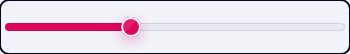

Range
A slider between two ends, the highest price in the filter drawer. A pill track, a lit run up to the thumb and a pink thumb with a white rim. Everything on this page is drawn by design/system/components/range.css through index.css.
Anatomy
| Part | Class or element | What to change there |
|---|---|---|
| The control | .range on an <input type="range"> | the full width of its container and the height of its press; the track and the thumb are drawn inside |
| The track | ::-webkit-slider-runnable-track, ::-moz-range-track | an 8px pill in the tile's fill with its hairline edge |
| The lit run | --fill (WebKit), ::-moz-range-progress (Firefox) | the act pink up to the thumb; the page sets --fill as the value moves, Firefox draws it itself |
| The thumb | ::-webkit-slider-thumb, ::-moz-range-thumb | a 20px round, the act's pink with its stripes, a white rim and the act's glow |
| The press | .range--tap | the control's height at the 44px floor, so a thumb is easy to catch; the track keeps its 8px |
Variants and sizes
One form, with one axis the container sets. The height is read from the render, not from the stylesheet.
- Press = the pointer of the container. The plain range is 20px high, the thumb's size. Wherever a thumb is caught by a finger, the control wears
--tapat 44px, which is the floor (WCAG 2.5.5,--size-tap); the filter drawer does. - Width = the layout. A range takes the whole width of its cell.
| Form | Measured | Where it stands |
|---|---|---|
| Plain | where a pointer works it and nothing needs the floor; no coloured screen draws it today | |
| Tap | the filter drawer's maximum price |
When to use
A range is for a value on a scale where the place on the scale says more than the digits: the highest price a person will look at. It does not replace the figure: the drawer pairs it with a Text field that shows the exact number and follows the thumb, so the slider answers "about where" and the field answers "exactly". Its label names the quantity ("Maximum price", microcopy 3.1-42), and the figure beside it is in the coin.
Rule and anti-rule
Use it
The filter drawer's "Maximum price", at --tap, with its figure in a Text field beside it. One thumb, one end of a scale.
Take another component
An exact figure that is typed is a Text field. Choosing one of a few set values is a Segmented control. Turning something on or off is a Switch. A range of two ends is not built: two thumbs on one track would be a new component, and the drawer draws its two ends as two fields.
States
Live at rest, on this page's theme: drag it, press the arrow keys on it, reach it with Tab.
Snapshots of the same instance, dark on the left and light on the right, taken with reduced motion.

--line-focus- Focus-visible is the one state
kit.cssdraws: a 2px ring set--space-1off the control, farther than the other controls' so it clears the thumb's glow. Its colour is--line-focus, white on the dark theme and navy on paper. - No hover face: the thumb already carries the glow at rest, and a pointer's press is the drag itself. A range never draws a refusal: its value is always inside its ends.
- No disabled look: the range stays live (D-58); only the Button draws disabled (D-239, D-263).
node design/kit/tools/shoot-states.js http://localhost:8765/ range # re-shoot after a change to range.css or its tokens node design/kit/tools/shoot-states.js http://localhost:8765/ range --check # step 9: fails if a snapshot drifted
In the code
| Token | Kind | Dark | Light |
|---|
Read live from tokens.css. Geometry (--size-check, --size-tap, --space-2, --radius-pill) comes straight from the primitives. --range-thumb-line is the one component token: the white rim of the thumb on the act pink, which no line role holds.
File: design/system/components/range.css, loaded by design/system/index.css in the atoms' group.
<input class="range range--tap" type="range" min="0" max="55" step="0.05" value="55" style="--fill:100%" aria-label="Maximum price">
<!-- the page sets --fill on input: range.style.setProperty('--fill', (range.value / range.max * 100) + '%') -->
Stands on: the catalogue, in the filter drawer. Until step 8 those screens still read kit.css; step 6 moves their markup onto this file's forms by the rename map.